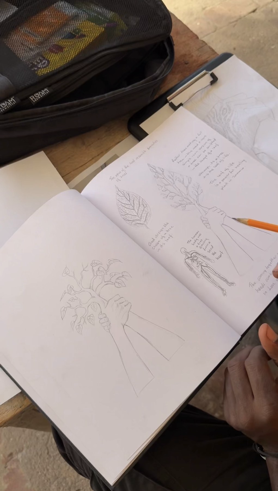
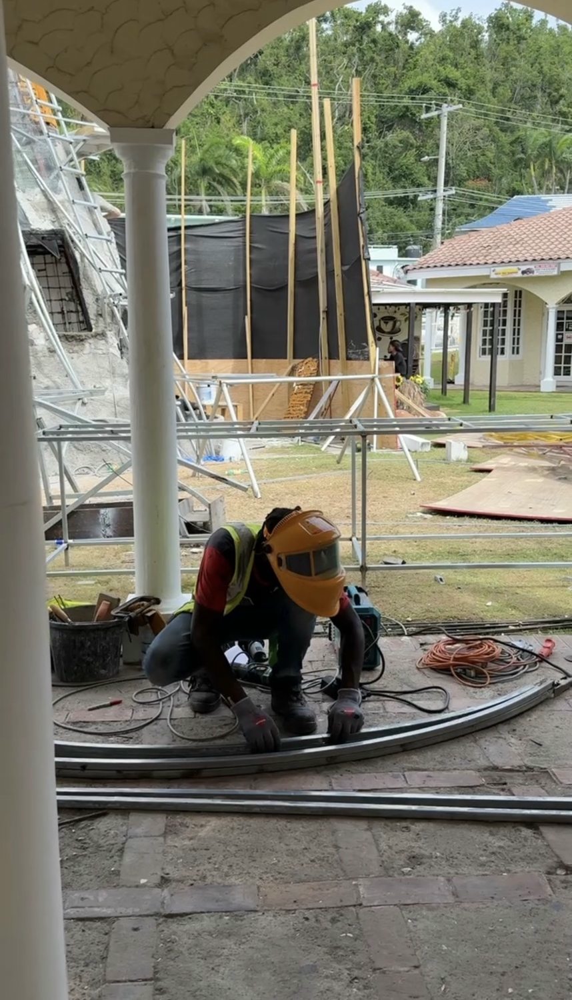
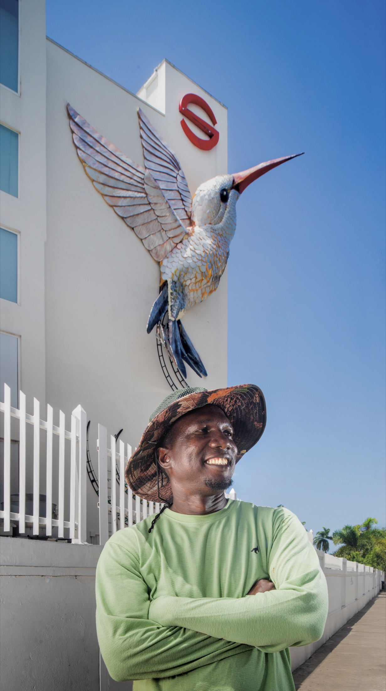

Scheed Cole / Jamaica
Sculptor & Sculptural Design Engineer
ART.
BUILT BIG.
Honouring people, culture and stories through sculpture. Designed and built by hand in Jamaica.
Explore the workBased in Jamaica · Commissions worldwide

62 FTTogether We Rise / Montego Bay
Art × EngineeringConcept / Design / Fabrication / InstallationMade in Jamaica
01 / Selected work
Ideas with
physical presence.

02 / Inside the process
Before the
landmark.
The making.
Sketches become structures. Materials become gestures. Sculpting, model-making and engineering come together to give an idea lasting form.
Inside Together We Rise



03 / The artist & the studio
Rooted here.
Thinking
without limits.
Born in Montego Bay and raised in Kingston, Scheed Cole brings sculptural expression and practical ingenuity to public spaces. A shared studio practice turns ambitious ideas into physical works.
Meet Scheed Inside the studio04 / What we create
Built for the real world.
Monumental sculpture & public art
02Museums & immersive environments
03Tourism & cultural installations
04Custom design & fabrication
Jamaica / Worldwide commissions